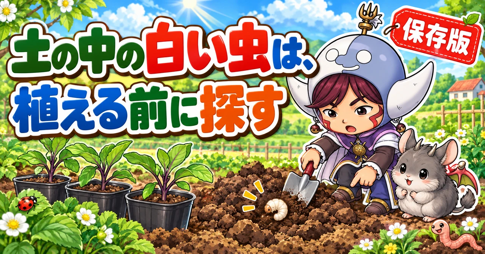
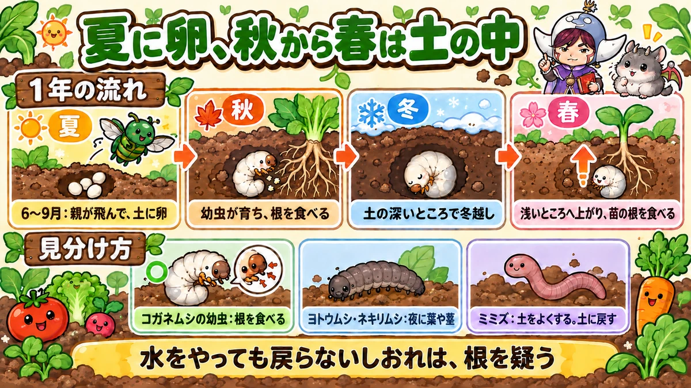
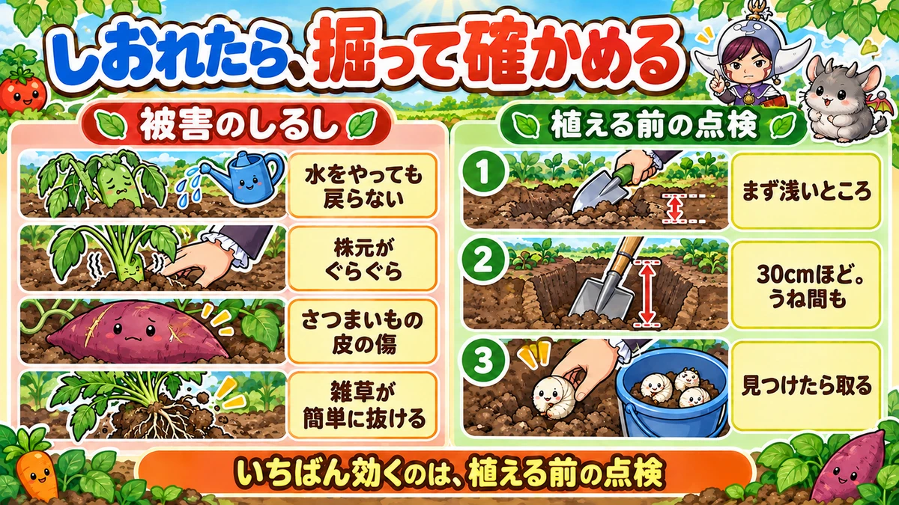
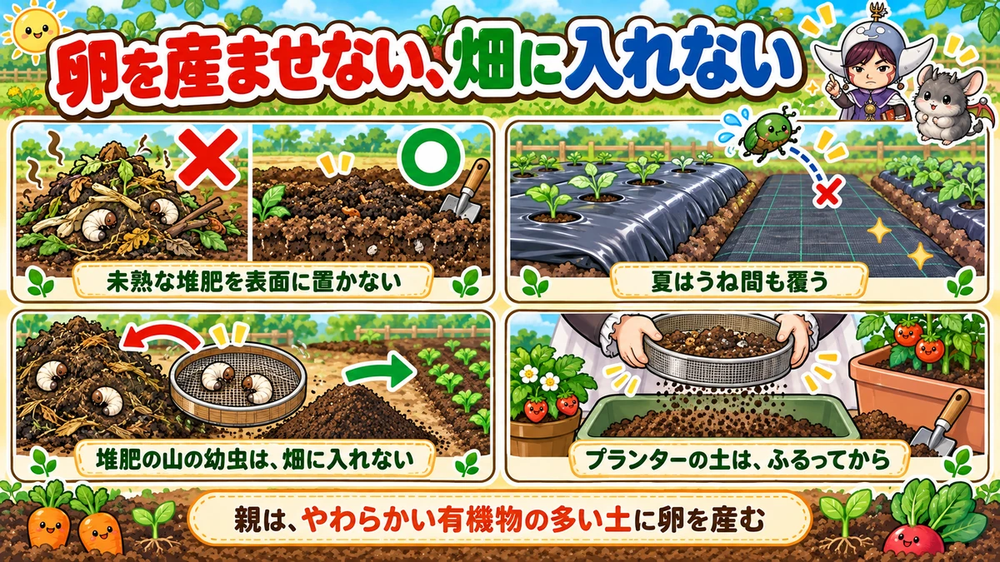

コガネムシの幼虫対策の決定版｜土の中の白い虫の見分け方、根を守る予防、卵を産ませない工夫

📖 この記事の目次
この記事で分かること
- 畑の土を掘ると出てくる、白くて体を丸めた太い幼虫。その多くは、コガネムシの仲間の幼虫です。
- 幼虫は土の中で野菜の根を食べます。苗がしおれて水をやっても戻らない、株がぐらぐらする、さつまいもの皮に傷がつく、といった被害が出ます。
- 親のコガネムシは、夏（6〜9月ごろ、多いのは7〜8月）に飛んできて、土の中に卵を産みます。生まれた幼虫は、秋から冬、春にかけて土の中で育ちます。
- 対策は、「植える前に土の中を探して取る」と「卵を産ませない」の2つ。
- 卵を産ませないために、完熟していない堆肥や、くさりかけの草を土の表面に置かない、うね間をシートで覆う、などの工夫をします。
- 堆肥の山の中にいる幼虫は、草や葉を分解してくれる働き者でもあります。畑に入れないようにすれば、そこでは役に立ちます。
春に植えたなすの苗が、なぜか元気がない。水をやっても、しおれたまま戻らない。気になって株元を手で押してみると、ぐらぐらと揺れる。抜いてみると、根がほとんどなくなっていて、まわりの土から白い幼虫が出てきた。家庭菜園で、よくある話です。
コガネムシの幼虫は、土の中にいるので、被害が出るまで気づきにくい虫です。しかも、親は夏に飛んできて卵を産み、幼虫は秋から春まで、半年以上も土の中で根を食べ続けます。どの時期に何をすればよいのかが分かりにくいのも、対策がむずかしく感じる理由です。この記事では、幼虫の1年の暮らし方から、被害の見分け方、見つけ方、退治と予防、プランターの土の扱いまで、順番に書いていきます。
早見：コガネムシの幼虫対策の基本
見た目
- 白〜乳白色の太いいも虫。頭は茶色
- 体を半円のように丸めている
- 頭の近くに、短い足が3対ある
- 大きいものは長さ3cmほど
被害のしるし
- 苗がしおれて、水をやっても戻らない
- 株元を押すと、ぐらぐらする
- まわりのほかの株より、育ちが遅い
- さつまいもの皮に、浅くかじられた傷や穴
- まわりの雑草が、根ごと簡単に抜ける
1年の流れ（一般的な地域の目安）
- 6〜9月：親のコガネムシが飛び、土に卵を産む（多いのは7〜8月）
- 秋：生まれた幼虫が育ち、根を食べはじめる
- 冬：土の深いところで幼虫のまま冬を越す
- 春：暖かくなると浅いところへ上がってきて、根を食べる。やがてさなぎになる
やること
- 植える前に、土を掘り返して幼虫を探し、取る
- 完熟していない堆肥や、くさりかけの草を土の表面に置かない
- 夏は、使っていない土やうね間をシートで覆い、卵を産ませない
- プランターの土は、使い回す前にふるって幼虫を探す
- 苗は早めに植えて、根が少しかじられても持ち直せる株にする

コガネムシの幼虫という虫
どんなコガネムシか
畑で困るのは、ドウガネブイブイ、アオドウガネ、マメコガネなど、いくつかの種類のコガネムシの幼虫です。親は、金属のような光沢のある、緑や銅色の甲虫です。
親のコガネムシは、夏に飛んできて、豆の仲間やぶどうなどの葉を食べます。そして、夕方になると土の中にもぐって、卵を産みます。卵は10日ほどでかえり、生まれた幼虫は、はじめは土の中の堆肥などを食べ、大きくなると植物の根を盛んに食べるようになります。
親の見分け方
- ドウガネブイブイ：銅色っぽい、つやのある、やや大きめのコガネムシ
- アオドウガネ：全体が緑色に光るコガネムシ
- マメコガネ：小さめで、頭と胸が緑色に光り、背中の羽は茶色。豆の仲間やぶどうの葉に、群れでついていることがある
どの種類も、幼虫はよく似た白いいも虫です。幼虫の姿で種類を見分ける必要はありません。対策は同じです。
幼虫の見た目
幼虫は、白から乳白色の、ずんぐりと太いいも虫です。頭は茶色く、頭の近くに短い足が3対あります。土から掘り出すと、体を半円のように丸めます。大きいものは長さ3cmほどになります。
ほかの虫との見分け方
土の中で見つかる幼虫は、ほかにもいます。
- ヨトウムシやネキリムシ：黒っぽい、または茶色っぽい、いも虫。さわると丸まるが、体は細め。夜に地上に出て、葉や茎を食べる
- コガネムシの幼虫：白くて太い。足が頭の近くにだけある。土の中で根を食べる
- カブトムシの幼虫：コガネムシの幼虫とよく似ているが、ずっと大きい。堆肥の山や、腐葉土の中にいることが多い
コガネムシの幼虫とカブトムシの幼虫は、形がよく似ていて、大きさで見分けるのが分かりやすい目安です。畑のうねの中で、根のまわりにいる白い幼虫は、コガネムシの仲間と考えて対策します。
何を食べるのか
幼虫は、土の中で、いろいろな植物の根を食べます。特に好むと言われるのは、さつまいも、いちご、大豆（えだまめ）などですが、なすやトマト、ピーマンなどの夏野菜の苗、キャベツやブロッコリーの苗、雑草の根なども食べます。
大きくなるほど食べる量が増えます。特に、秋から冬、春に大きく育った幼虫が、春に植えた苗の根を食べて、苗を弱らせることがよくあります。
1年の暮らし方
夏：親が飛んできて、卵を産む
コガネムシの親は、6月ごろから9月ごろまで飛び回り、特に多いのは7〜8月です。昼は植物の葉を食べ、夕方になると土にもぐって卵を産みます。
親は、有機物の多い、やわらかい土を好んで卵を産みます。完熟していない堆肥や、くさりかけの草、落ち葉などが土の表面にあると、卵を産みに来やすくなり、生まれた幼虫のえさ場にもなります。
秋：幼虫が育ち、根を食べはじめる
夏に生まれた幼虫は、秋にかけて大きく育ち、根を食べはじめます。さつまいもでは、9月ごろから大きくなった幼虫が増え、収穫まで芋をかじり続けるので、収穫が遅いほど被害が大きくなる、と言われています。
秋に植えたキャベツやブロッコリー、いちごの苗が、植えてしばらくしてしおれてくるのも、この幼虫のしわざのことがあります。
冬：土の深いところで冬を越す
寒くなると、幼虫は土の深いところにもぐり、幼虫のまま冬を越します。冬に土を浅く掘っても見つかりにくいのは、このためです。
春：浅いところへ上がり、根を食べ、さなぎになる
春、暖かくなると、幼虫は浅いところへ上がってきて、また根を食べます。ちょうど、夏野菜の苗を植える時期です。植えたばかりの苗は根が少ないので、幼虫に根をかじられると、すぐにしおれてしまいます。
やがて幼虫は土の中でさなぎになり、初夏に親のコガネムシになって出てきます。こうして、1年に1回、同じことがくり返されます。
被害の見分け方
しおれて、水をやっても戻らない
暑い日に苗がしおれても、水をやって夕方に戻るなら、水不足のことが多いです。水をやってもしおれたまま、何日たっても元気が戻らない場合は、根に問題がある可能性があります。根が食べられていると、水を吸い上げられないからです。
株元がぐらぐらする
株元を指で軽く押してみて、ぐらぐらと揺れる場合は、根が張っていないか、根が食べられています。植えてしばらくたった苗が、植えたときよりぐらぐらしていたら、土の中を疑います。
まわりの株より育ちが遅い
同じ日に植えた苗のうち、1株だけ明らかに小さい、葉の色が悪い、という場合も、その株の根が食べられていることがあります。
さつまいもの皮の傷
さつまいもを掘ると、皮の表面に、浅くかじられたような傷や、小さな穴がたくさんついていることがあります。これは、コガネムシの幼虫がかじった跡のことが多いです。中まで食べられることは少ないですが、見た目が悪くなり、傷んだところから悪くなりやすくなります。
雑草が簡単に抜ける
畑のまわりの雑草が、根ごと、すっと抜けることがあります。雑草の根が、幼虫に食べられているのかもしれません。雑草でも被害が出ているなら、近くの野菜も危ないと考えて、土を探ります。
似た症状のほかの原因
しおれる原因は、ほかにもあります。
- 水不足：水をやると夕方には戻る
- 青枯れ病など、根や茎の病気：株元をつかんでも、ぐらぐらしない。茎を切ると、切り口が変色していることがある
- ネキリムシ：地ぎわで茎がかじり切られて、苗が倒れる
- コガネムシの幼虫：株元がぐらぐらし、抜くと根が少ない。まわりの土に白い幼虫がいる
迷ったときは、株元をつかんでみて、ぐらぐらするかどうかを確かめると、見分ける手がかりになります。
親のコガネムシの被害
葉を食べる
土の中の幼虫だけでなく、夏に飛んでくる親のコガネムシも、野菜の葉を食べます。豆の仲間、なす、ぶどう、ばらなどの葉に、緑や銅色に光る甲虫がついていたら、親のコガネムシです。
親は体が大きく、一度に食べる量も多いので、葉に大きくかじり取ったような穴があきます。種類によっては、葉の筋を残して、網のように食べるものもいます。
ふんが手がかり
親のコガネムシは、夕方から朝にかけて食べることが多く、昼間はなかなか姿が見えないことがあります。そんなときは、葉の上に落ちているふんを見ます。
ヨトウムシなどのいも虫のふんは、小さな丸い粒であることが多いのに対し、コガネムシの親のふんは、少し大きく、細長い形をしています。葉の上に細長いふんがあり、大きくかじられた跡があれば、コガネムシの親が来ていると考えます。
食べ跡の見分け方
- 大きくかじり取ったような穴：コガネムシの親
- 葉の表面が削られて、透けたような跡：ニジュウヤホシテントウ（テントウムシダマシ）など
- 小さな丸い穴がたくさん：ノミのように跳ねる小さな甲虫
- 葉の筋だけ残った網のような跡：若いヨトウムシや、コガネムシの一部の種類
実をかじられることも
夏、熟したトマトの実に、カナブンなどの甲虫がしがみついて、実をかじることもあります。実の上のほうが、大きくえぐられたように食べられていたら、この仲間のしわざです。なすの葉にコガネムシの仲間が来ている畑では、近くのトマトの実にも注意します。見つけたら取り、熟した実は早めに収穫します。
見つけ方と退治
しおれた株は、掘って確かめる
しおれた株、ぐらぐらする株があったら、まわりの土をそっと掘ってみます。株元から少し離れたところから、移植ごてで土をほぐしていくと、根のまわりに白い幼虫が見つかることがあります。
1株に何匹もいることがあります。見つけた幼虫は、取り除きます。根がほとんどなくなっている苗は、元に戻りにくいので、幼虫を取ったうえで、予備の苗に植え替えます。
植える前に、土を掘って探す
いちばん効くのは、苗を植える前に、土を掘り返して幼虫を探すことです。
1．うねを作る前に、スコップで30cmほどの深さまで土を掘り起こします。
2．掘り起こした土を、少しずつ崩しながら見ていきます。
3．白い幼虫が見つかったら、取り除きます。
4．うねの部分だけでなく、うねとうねの間（うね間）も掘り起こします。うね間の雑草の根を食べている幼虫が、野菜の根に移ってくるからです。
春の植えつけ前と、秋の植えつけ前に、この作業をしておくと、被害がぐっと減ります。
マルチを張ったあとでも
すでにマルチを張ってしまった場合でも、植える直前に、植え穴のまわりのマルチを少しめくって、土を探ってみる価値があります。マルチを破らないように、すそを外してめくれば、また張り直せます。
植える前の点検の手順
春と秋の植えつけ前に、次の手順で土を点検すると、コガネムシの幼虫だけでなく、ヨトウムシやネキリムシの幼虫、さなぎもまとめて見つけられます。
1．前の野菜の片づけが終わったら、マルチをはがし、残った根や草を取り除きます。
2．いきなりくわで深く耕さず、まず移植ごてで、表面から10〜15cmほどの土を少しずつ探ります。浅いところにいる虫を、深くへ埋めこまないためです。
3．次に、スコップで30cmほどの深さまで、ひと区画ずつ掘り起こします。
4．掘り出した土のかたまりを、手やくわで崩しながら見ていきます。白い幼虫、黒っぽいいも虫、茶色いさなぎがいないか探します。
5．見つけた虫は、バケツなどにまとめて入れていきます。
6．うね間も同じように掘り起こします。
7．最後に、堆肥や元肥を入れて、うねを作ります。
狭い場所やプランターなら、土をふるいにかけると、取りこぼしが少なくなります。
取った幼虫をどうするか
取った幼虫は、畑の中に戻さないようにします。鳥が食べに来る場所に置いておく人もいます。

被害が出た株の手当て
しおれた株から幼虫を取り除いたら、根の残り方を見て、次のように手当てします。
- 根がある程度残っている場合：土を戻して、株元をしっかり押さえ、たっぷり水をやります。数日様子を見て、新しい葉が伸びてくれば持ち直しています。
- 根がほとんど残っていない場合：持ち直すのはむずかしいので、予備の苗に植え替えます。植え替える前に、まわりの土を広めに探って、ほかの幼虫も取っておきます。
苗を植えるときは、何株か予備の苗を用意しておくと、こうしたときに慌てずにすみます。
卵を産ませない予防
完熟していない堆肥を、表面に置かない
コガネムシの親は、有機物の多いやわらかい土に卵を産みます。完熟していない堆肥や、くさりかけの草、落ち葉、米ぬかなどを土の表面に置いておくと、卵を産みに来やすくなります。生まれた幼虫にとっても、最初のえさ場になります。
- 畑に入れる堆肥は、よく完熟したものを使う
- 入れた堆肥は、表面に置きっぱなしにせず、土とよく混ぜる
- 野菜くずや刈った草を、うねの上に放置しない
肥料は、植えるまでに土となじませる
米ぬかや油かす、鶏ふんなどの有機の肥料を土に入れると、分解が進むあいだ、においが出ます。このにおいに、いろいろな虫が寄ってくることがあります。有機の肥料は、植える2〜3週間前までに入れて、よく土と混ぜ、分解が落ちつくまで時間をとってから植えるようにします。
植える直前に肥料を入れ、表面に残ったままにしておくのは、虫を呼ぶもとになります。
夏に、空いた土とうね間を覆う
親が卵を産む夏（特に7〜8月）に、土がむき出しになっていると、卵を産まれやすくなります。
- うねにはマルチを張る
- うね間は、防草シートなどで覆う
- しばらく使わない場所は、シートで覆っておく
全部を覆うのは大変ですが、毎年コガネムシの幼虫で困っている場所や、さつまいもを育てる場所だけでも覆っておくと、効果が期待できます。さつまいもの場合、うね間を防草シートで覆っておくと、つるがうね間に根を下ろすのも防げて、一石二鳥です。
夏の太陽熱で土を温める
夏の暑い時期に、土に水をまいてから透明のマルチをぴったりかぶせて、1か月ほど置いておくと、土の中がとても高い温度になり、浅いところの卵や幼虫を減らすことができます。雑草のタネや、病気の元を減らす効果も期待できます。秋冬野菜を植える予定の場所なら、7月ごろから始めます。
防虫ネットで、親を入れない
防虫ネットのトンネルの中には、親のコガネムシが入れないので、卵を産まれることもありません。ただし、ネットの中の土に、はじめから幼虫がいた場合は防げません。ネットをかける前に、土を探っておくことが大切です。
見つけた親は取る
夏、豆の仲間などの葉に、緑や銅色に光る甲虫がついていたら、親のコガネムシです。見つけたら取ります。葉の真下に、水を入れた容器を構えて、葉を軽くたたくと、ぽとりと落ちてきます。コガネムシの親は、つかまえようとすると、足を縮めて下に落ちる性質があるからです。
苗は早めに植える
夏野菜の苗は、植えどきの中でも早めに植えて、根をしっかり張らせておくと、多少根をかじられても持ち直しやすくなります。植えつけが遅れて、根が少ない時期に幼虫が浅いところへ上がってくると、被害が大きくなりやすくなります。たとえばピーマンなら、一般的な地域では4月中旬から5月の大型連休ごろまでに植えておくと、根をかじられても持ち直しやすくなります。植えたあと元気がなく、株元がぐらぐらするときは、一度抜いて、まわりの土の中の幼虫を探してから植え直します。植えつけが遅れると、その後の育ちも遅れて、収穫の量が減ることにもつながります。

天敵を味方にする
コガネムシの幼虫にも、天敵がいます。土を掘り起こしていると、鳥がそばに降りてきて、出てきた幼虫をついばんでいくことがあります。モグラも、土の中で幼虫を食べます。地面を歩き回るオサムシなどの甲虫や、幼虫に卵を産みつけるはちの仲間もいます。
強い薬を土に混ぜると、こうした天敵や、ミミズなどの役に立つ生き物も減ってしまいます。手で探して取る、卵を産ませない工夫をする、という方法を中心にすると、天敵もはたらきやすい畑になります。
まわりの環境にも目を向ける
畑のすぐそばに、雑草が茂った空き地や、親のコガネムシが葉を食べに集まる木があると、そこから親が飛んできて、畑に卵を産みやすくなります。こうした場所が近い畑では、夏の間、土をむき出しにしないこと、見つけた親を取ることを、特に念入りに行います。
季節ごとにやること
- 1〜2月：土が深くまで冷えている時期。空いた畑は土を大きく掘り起こして寒さに当てる。出てきた幼虫は取る
- 3〜4月：夏野菜を植える前に、30cmほど掘り起こして幼虫を探す。うね間も忘れずに
- 5月：植えた苗の様子を見る。しおれる株、ぐらぐらする株は掘って確かめる
- 6〜9月：親が飛んで卵を産む時期。空いた土とうね間を覆う。完熟していない有機物を表面に置かない。見つけた親は取る。太陽熱で土を温める
- 9〜11月：さつまいもは収穫が遅いほど被害が増えるので、とりどきを逃さない。秋の植えつけ前に土を探る
- 12月：収穫の終わった場所を掘り起こして、幼虫を探す
堆肥の山の幼虫は、働き者
分解を助けている
畑のすみの堆肥の山や、野菜くずを積んでいる場所を掘ると、白い幼虫がたくさん出てくることがあります。この幼虫たちは、そこでは、野菜くずや草、根を食べて、ふんにして出すことで、分解を早めてくれています。ふんは、微生物のえさにもなります。
だから、堆肥の山の中の幼虫を、わざわざ退治する必要はありません。ミミズやダンゴムシなども、同じように堆肥の山で分解を助けています。野菜くずや草は、なるべく細かく切ってから積むと、分解が早く進みます。
畑には入れない
困るのは、堆肥といっしょに幼虫を畑へ運びこんでしまうことです。堆肥を畑に入れる前に、ふるいにかけて、出てきた幼虫や、大きな分解しきっていないかたまりは、堆肥の山に戻します。
よく完熟した堆肥の中には、幼虫はほとんどいません。えさになるものが残っていないからです。完熟した堆肥を使うことは、幼虫を運びこまないことにもつながります。
野菜ごとの注意
さつまいも
コガネムシの幼虫の被害が、特に目立つ野菜です。植える前に土を探る、うねにマルチを張り、うね間を防草シートで覆う、完熟していない有機物を入れない、を組み合わせます。収穫が遅いほど被害が増えるので、とりどきを逃さないようにします。
さつまいもをくわしく
さつまいもは、コガネムシの幼虫の被害がいちばん目立ちやすい野菜です。次の順で守ります。
1．植える前（5月ごろ）：30cmほど掘り起こして幼虫を探す。うね間も掘る
2．うね作り：完熟した堆肥だけを使い、表面に有機物を残さない。うねにマルチを張る
3．植えたあと（6〜8月）：親が卵を産む時期。うね間を防草シートで覆い、土をむき出しにしない
4．収穫（9〜11月）：大きくなった幼虫は、9月以降に増え、収穫まで芋をかじり続ける。とりどきを逃さない
5．収穫のあと：掘り上げた土の中の幼虫を取ってから、次の作付けへ
前の年に被害が大きかった場所では、さつまいもを別の場所に移すことも考えます。
いちご
秋に植えたいちごの苗が、冬から春にかけてしおれてくることがあります。株元がぐらぐらしたら、掘って確かめます。植える前の土をよく探っておくことが大切です。
えだまめ、豆の仲間
親のコガネムシが葉を食べに来る野菜でもあり、土の中では幼虫が根を食べます。夏に葉が網のように食べられていたら、親がいないか探します。
なす、トマト、ピーマン
春に植えた苗が根を食べられて、しおれることがあります。植える前の土を探り、早めに植えて根を張らせます。夏には、熟したトマトの実に、カナブンなどの甲虫がついてかじることもあります。
キャベツ、ブロッコリーなど秋冬野菜
夏に産まれた卵からかえった幼虫が、秋に植えた苗の根を食べることがあります。秋の植えつけ前にも、土を探っておきます。
じゃがいも、大根、にんじんなど
土の中で育つ芋や根を食べる野菜は、幼虫にかじられると、その跡がそのまま残ります。じゃがいもの表面に浅い穴があいていたり、大根やにんじんの表面がところどころかじられていたりしたら、幼虫がいた可能性があります。こうした野菜を育てる場所は、タネまきや植えつけの前に、土を深めに掘って探しておきます。収穫したときに幼虫が出てきたら、その場所は次の作付けの前にも念入りに探ります。
プランターの土に注意
プランターにも卵を産む
親のコガネムシは、ベランダのプランターにも飛んできて、卵を産みます。プランターでさつまいもを育てたら、収穫のときに幼虫がたくさん出てきて、芋がほとんど食べられていた、ということもあります。
土を使い回す前に、ふるう
プランターの土を次の野菜に使い回すときは、そのまま使わず、一度土をあけて、ふるいにかけます。白い幼虫や卵が見つかったら、取り除きます。
土をしばらく使わない場合は、黒いビニール袋に入れて日当たりのよい場所に置き、熱で温める方法もあります。熱いお湯を土にかける方法もありますが、やけどに気をつけてください。
夏の間は、土をむき出しにしない
使っていないプランターの土を、夏の間、むき出しのまま置いておくと、卵を産まれやすくなります。袋に入れて口を閉じておくか、ふたや不織布で覆っておきます。
説明が分かれるところ
幼虫は害虫か、役に立つ虫か
畑のうねの中では根を食べる害虫ですが、堆肥の山の中では分解を助ける働き者です。どちらの面を見るかで、説明が分かれます。「畑では取り、堆肥の山ではそのまま」と、場所で扱いを分けるのが、現実的な答えです。
うね間を覆うか、覆わないか
うね間を防草シートで覆うと、卵を産まれる場所が減ります。一方で、手間と費用がかかり、雑草を少し残して天敵の居場所にしたい、という考え方もあります。毎年コガネムシの被害が大きい場所や、さつまいもの場所だけ覆う、という使い分けもできます。
冬に土を掘り起こすのは効くか
冬に空いた畑の土を大きく掘り起こして寒さに当てると、土の中の虫が減る、という説明があります。一方で、コガネムシの幼虫は冬は土の深いところにいるので、冬の掘り起こしだけで大きく減らすのはむずかしい、という見方もあります。
冬の掘り起こしは、ヨトウムシのさなぎなど、浅いところにいる虫に効きやすい作業と考え、コガネムシの幼虫には、春の植えつけ前の点検をあわせて行うのが確実です。
太陽熱で温めるか
夏の太陽熱で土を温める方法は、卵や幼虫、雑草のタネを減らせる一方、その間は畑を使えず、土の中の役に立つ生き物にも影響します。被害が大きかった場所に絞って行うのがよいでしょう。
よくある失敗
しおれた苗に、水をやり続けた
根が食べられている苗は、水をやっても戻りません。数日たっても戻らなければ、掘って確かめます。
うねだけ掘って、うね間を掘らなかった
うね間の雑草の根を食べている幼虫が、野菜の根に移ってきます。うね間も掘り起こします。
完熟していない堆肥を、表面にまいた
卵を産みに来やすくなり、幼虫のえさ場にもなります。完熟した堆肥を、土とよく混ぜて使います。
堆肥の山の幼虫ごと、畑に入れた
ふるいにかけて、幼虫は堆肥の山に戻します。
プランターの土を、そのまま使い回した
前の年に産まれた卵や幼虫が、土の中に残っていることがあります。ふるってから使います。
よくある質問
ミミズとの違いは
ミミズは、細長く、足がなく、体がのびちぢみします。土を食べて、ふんとして出すことで、土をふかふかにしてくれる、役に立つ生き物です。コガネムシの幼虫は、太くて白く、頭の近くに足があり、体を丸めています。ミミズは取らずに、土に戻してください。
市販の薬はありますか
土の中の虫に使える市販の薬もあります。使う場合は、ラベルに書かれた野菜の名前、使う時期、量を必ず確かめてください。薬を使わない場合は、この記事の、掘って探す・卵を産ませない、の2つを続けることが中心になります。
冬に土を掘っても、幼虫が見つかりません
冬は、幼虫が土の深いところにもぐっています。春、暖かくなって浅いところへ上がってきたころに、植えつけ前の土を探ると、見つけやすくなります。
1匹見つけたら、ほかにもいますか
いることが多いです。親は、1か所に何個も卵を産みます。1匹見つけたら、そのまわりも広めに探します。
モグラが出るのは、幼虫がいるからですか
モグラは、土の中のミミズや虫の幼虫を食べます。コガネムシの幼虫も、モグラのえさの1つです。モグラが多い畑は、土の中に虫やミミズが多い畑、とも言えます。
幼虫がとても多い区画は、土を入れ替えたほうがいいですか
前の年にひどい被害が出て、掘っても掘っても幼虫が出てくるような区画では、表面から30cmほどの土を取りのぞいて、ほかの場所の土と入れ替える、という方法をとる人もいます。ただ、大がかりな作業になるので、まずは、植える前の点検をていねいに行い、夏に土を覆って新しい卵を産ませない、という基本を1〜2年続けてみてください。それでも減らなければ、土の入れ替えや、育てる野菜の場所を変えることを考えます。
幼虫を見つけたのに、株が元気です
根がたくさんある大きな株なら、幼虫に少しかじられても、すぐにはしおれません。ただ、幼虫が大きくなるにつれて食べる量も増えるので、見つけたものは取っておきます。株元のまわりも、軽く探っておくと安心です。
芝生や花壇の近くの畑で、毎年出ます
芝生や花壇の土の中にも、コガネムシの幼虫はよくいます。そこで育った親が、近くの畑に飛んできて卵を産みます。畑の中だけでなく、まわりから来ることを前提に、夏に土を覆う、植える前に土を探る、を毎年続けてください。
収穫が終わったら、何をすればいいですか
収穫が終わった場所は、根を抜いたあとに、土を掘り起こして幼虫を探しておきます。特に、さつまいもやいちごなど、被害が大きかった場所は念入りに。ここで取っておくと、次の野菜の被害が減ります。
さつまいもの傷は、食べられますか
皮の浅い傷なら、そこを厚めにむけば食べられます。傷のあるものは傷みやすいので、先に食べるようにします。
学ぶ：コガネムシの幼虫のしくみ🔬
なぜ、土の中で暮らすのか
コガネムシの仲間は、一生の大部分を幼虫として土の中で過ごします。土の中は、温度や湿り気の変化が小さく、天敵にも見つかりにくい場所です。そして、植物の根や有機物という、えさがたくさんあります。親として地上で過ごすのは、夏のわずかな期間だけです。
なぜ、未熟な堆肥に集まるのか
生まれたばかりの幼虫は、まだあごの力が弱く、生きた根をかじるのはむずかしい大きさです。そこで、やわらかく分解しかけた有機物を食べて育ちます。親が、有機物の多い土を選んで卵を産むのは、生まれた子のえさを用意するためだと考えられます。
完熟した堆肥は、えさになる部分がほとんど分解しきっているので、幼虫は育ちにくくなります。未熟な堆肥を避けるのは、コガネムシにとっての「子育ての場所」を作らないことなのです。
なぜ、春の被害が大きいのか
幼虫は、生まれてから何度か皮を脱いで大きくなります。夏に生まれた幼虫は、秋から冬を越すまでに大きく育ち、春には、いちばん大きく、よく食べる段階になっています。
一方、春に植えた苗は、根がまだ少なく、少しかじられただけで水を吸えなくなります。「いちばんよく食べる幼虫」と「いちばん根の少ない苗」が出会うのが、春の植えつけの時期です。植える前に土を探ることが、何より効く理由はここにあります。
なぜ、根を食べられると、しおれるのか
植物は、根の先の細い根毛から、水を吸い上げています。幼虫は、このやわらかい根を好んで食べます。根毛がなくなると、植物は水を吸えなくなり、どれだけ水をやってもしおれたままになります。水をやっても戻らないしおれは、根の働きが失われたしるしなのです。
まとめ
ここまで読んでくださって、ありがとうございます！
コガネムシの幼虫対策のポイントを、もう一度まとめておきます。
- 土の中の白くて太い、丸まった幼虫は、コガネムシの仲間の幼虫。根を食べる
- しおれて水をやっても戻らない、株元がぐらぐらする、さつまいもの皮の傷は、幼虫のしわざかも
- 親は6〜9月（特に7〜8月）に飛び、有機物の多いやわらかい土に卵を産む
- 幼虫は土の深いところで冬を越し、春に浅いところへ上がって根を食べる
- 植える前に30cmほど掘り起こして探す。うね間も忘れずに
- 完熟していない堆肥や、くさりかけの草を土の表面に置かない
- 夏は空いた土とうね間を覆って、卵を産ませない
- 堆肥の山の幼虫は働き者。ふるって、畑には入れない
- しおれた株は掘って確かめ、根が残っていなければ予備の苗に植え替える
- 親のふんは細長い。葉の大きな穴と細長いふんがあれば、親が来ている
- プランターの土は、使い回す前にふるう
- 苗は早めに植えて根を張らせ、予備の苗を用意しておく
- 有機の肥料は植える2〜3週間前までに入れて、土となじませる
コガネムシの幼虫は、土の中にいて見えないぶん、気づいたときには被害が出ていることが多い虫です。それでも、1年の暮らし方が分かれば、手を打つ時期ははっきりしています。次に苗を植える前に、まずスコップでひと掘り、土の中を見てみてください🪲
防草シート
夏にうね間や空いた土を覆うと、親のコガネムシが卵を産む場所が減ります。


移植ごて
植える前に、表面の土を少しずつ探って幼虫を見つけるのに使います。

透明マルチ
夏の太陽熱で土を温めて、浅いところの卵や幼虫、雑草のタネを減らします。
![[商品価格に関しましては、リンクが作成された時点と現時点で情報が変更されている場合がございます。]](https://hbb.afl.rakuten.co.jp/hgb/5676ec31.2582035e.5676ec32.c4887243/?me_id=1296241&item_id=10004946&pc=https%3A%2F%2Fthumbnail.image.rakuten.co.jp%2F%400_mall%2Fotentosan%2Fcabinet%2Fimg%2Fgoods02%2Fmulti%2Ftoumei-multi_pb.jpg%3F_ex%3D240x240&s=240x240&t=picttext "[商品価格に関しましては、リンクが作成された時点と現時点で情報が変更されている場合がございます。]")
あわせて読みたい


次に読む
記事一覧へ